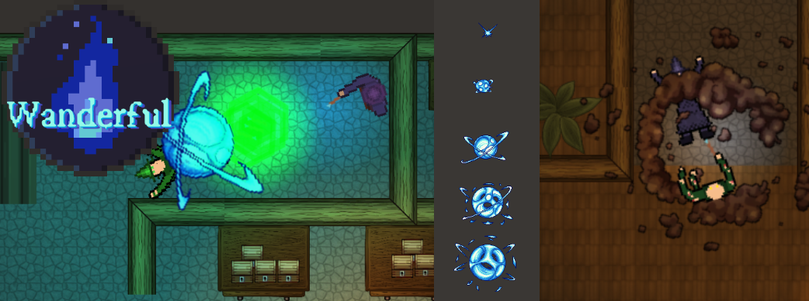

Week 6 - Back to the Game
At the beginning of the sixth week, the group held a meeting to discuss/show off our progress as well as merge our files into a single file which we could all switch to working on for the next week. Upon doing this we ran into a bit of trouble with merge conflicts so we agreed to do this every week from then on as we didnt want too many conflicts to deal with close to the final deadline. During the aforementioned meeting we also discussed what each person should work on during the coming week. For this week, I chose to work on multiple spell types and I started looking into how we could go about implementing things like AoE spells, Beam spells and various spells used for utility. AoE spells I found to be quite straight forward, as they could be quite easily done by instead of just destroying a spell projectile on collision you would instead create an explosion effect and deal damage to anything within a certain radius of this explosion. The explosion visual effects I got from Baptiste in the group, who had found various free, open license artwork that we could use for the group. I used a set of images to create animated impact/explosion effects for two spell explosions as well as impacts for the regular, non AoE spells. As an added touch, I added a light effect so that the explosions/impacts would give off light that gradually decayed with the animated effect.
Additionally during this week I got to work on utility spells. For the demo I added three spells in this category (these being; heal, increased movement speed and a blink/short range teleport ability). Out of these, the Blink spell took a bit of time to get somewhat functional but slightly inconsistent which was caused by some issues with the colliders used in our levels. I also started looking into the beam spell but was unable to finish it during the sixth week due to a lack of time.